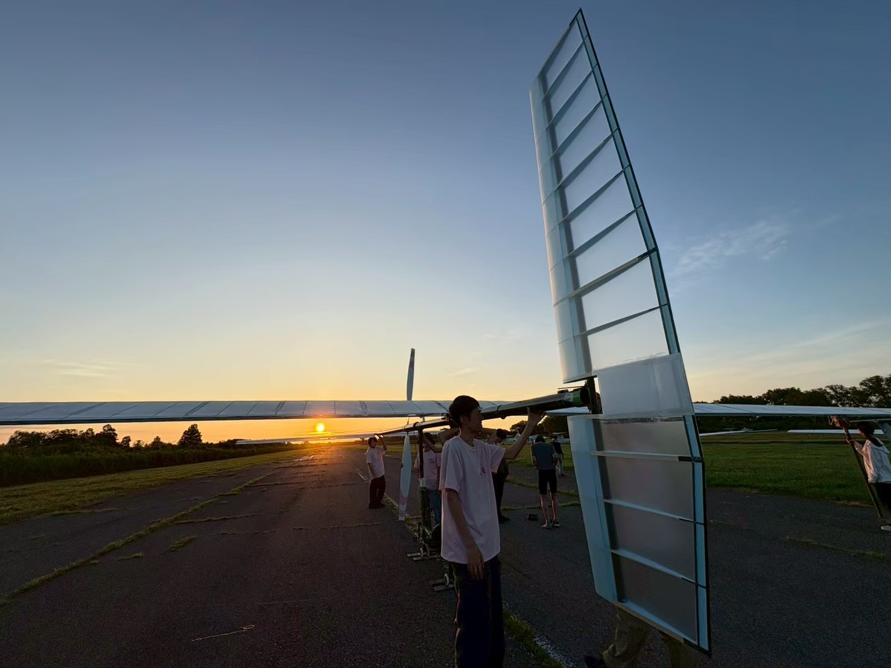
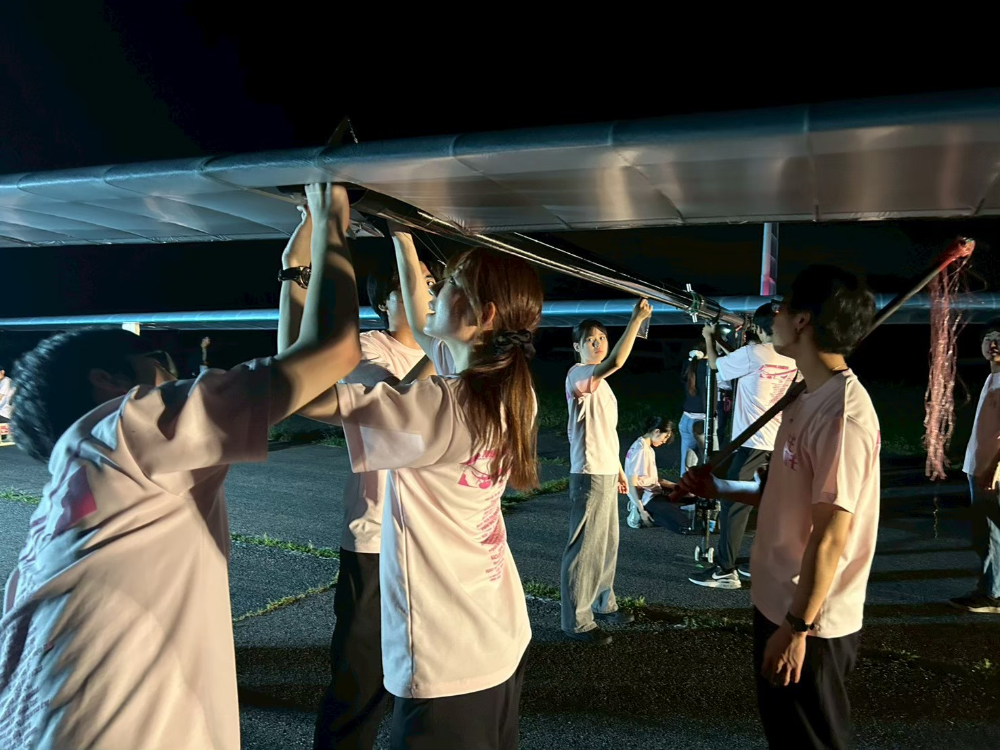
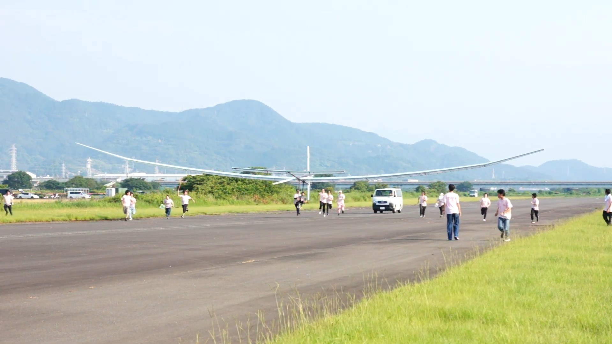
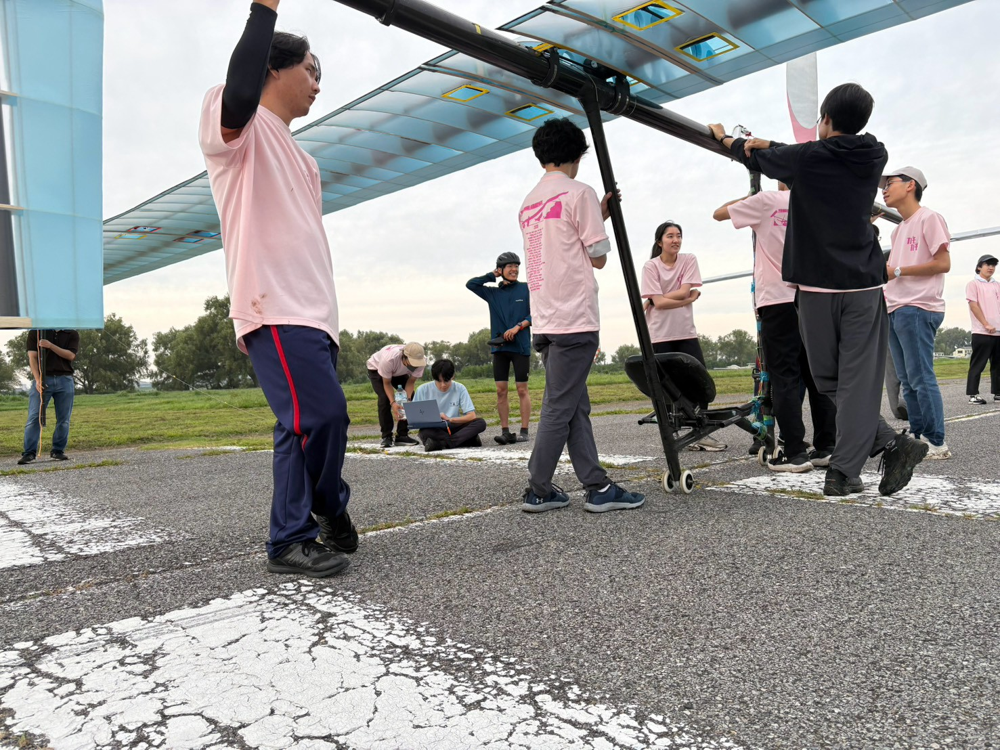
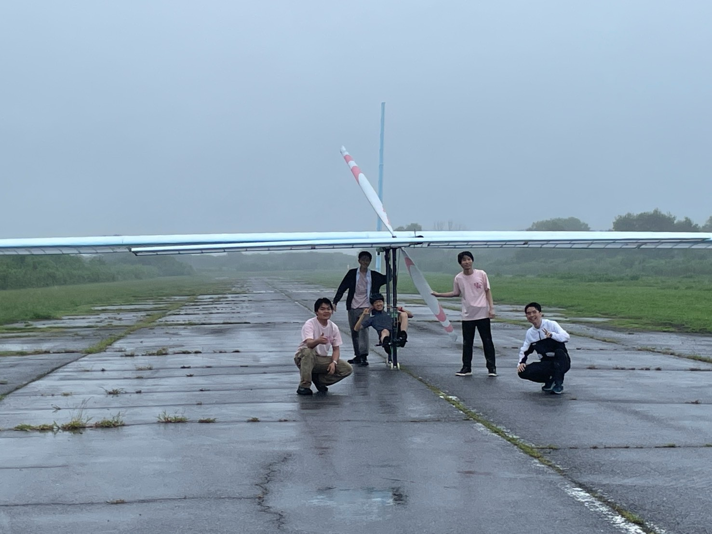

２６代 2~5回TFレポート
TFとは
「TF」とは「テストフライト」の略で、その名の通り学内や飛行場で機体を実際に飛ばして試験を行うことです。幣サークルでは７月１２日から８月１７日まで合計５回のテストフライトを行いました。

大利根飛行場で待機する機体
第２回TF
第２回TFは大利根飛行場にて実施されました。短距離のフライトを目標にしましたが、当日の飛行場では横風に悩まされ、安定した飛行が行えませんでした。らに着陸時に機体が損傷するなどのトラブルも発生し、修理のためフライトを中断することもありました。

機体組み立て中の様子
第３回TF
第３回TFは富士川飛行場にて実施されました。風の少ない理想的な環境でのフライトでしたが、目標としていた安定した飛行を達成することができませんでした。機体のピッチ（上下）方向への安定性や、操縦系統の不安定さに原因があったと思われます。

飛行中の様子
第４回TF
第４回TFは大利根飛行場にて実施されました。前回の反省を踏まえ安定性や操縦系統の改良を加えて挑みましたが、あと一歩のところで安定した飛行には至りませんでした。

フライト直前の様子（機体大きいね）
第５回TF
第５回TFも大利根飛行場にて実施されました。前回の結果を踏まえ、機体を細かく調整して挑んだフライトでしたが、当日は雨に見舞われ苦しい環境でのTFとなりました。目標としていた安定した飛行に近いフライトを達成することができましたが、雨による機体の性能低下等により十分な飛行距離を達成できませんでした。

雨にさらされる機体と人間
さいごに
2026年執行代では目標としていた安定したフライトを達成することはできませんでした。しかし６年ぶりの機体製作で、失われたノウハウやデータを十分に会得できたと思います。今後はこれらをもとに2027年の鳥人間コンテストに向けて、より高性能な機体の製作に努めてまいります。
ここまで読んでいただきありがとうございました！
横浜AEROSPACE 27代構造設計 山鹿